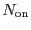
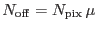
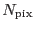
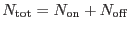
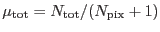
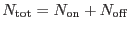
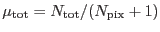
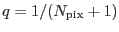
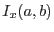

XMM-Newton Science Analysis System
embadpixfind (embadpixfind-2.5) [xmmsas_20170112_1337-16.0.0]
embadpixfind
estimates the local statistical average  in a running window around each
pixel by taking the smallest of the average or the median + 1
(1 is added to take care of the case when the median is 0, the median
allows to remove the effect of other bad pixels in the vicinity).
Then it builds a significance map via the Li and Ma criterion
(Li & Ma 1983, ApJ 272, 317):
in a running window around each
pixel by taking the smallest of the average or the median + 1
(1 is added to take care of the case when the median is 0, the median
allows to remove the effect of other bad pixels in the vicinity).
Then it builds a significance map via the Li and Ma criterion
(Li & Ma 1983, ApJ 272, 317):
where  is the number of counts in the current pixel,
 is the number of reference counts,
 is the number of pixels used to compute the local average
((2 halfwidth2d + 1) - 1, if none of the pixels in the window
has been rejected already),
 is the total
number of counts in the window, and
 is the average
number of counts per pixel in the window.
- 1, if none of the pixels in the window
has been rejected already),
 is the total
number of counts in the window, and
 is the average
number of counts per pixel in the window.
This significance map is then used to locate the most promising
candidate bad pixels. They are examined in turn, in decreasing order.
The exact probability that the current excess is a statistical anomaly
of a flat distribution is computed from the cumulative binomial law:
where
 is the probability that a random count fall
in the central pixel, and  is the incomplete beta function.
This is significantly different from the probability estimated from
Eq.(1) for small numbers (Eq.3 gives a larger probability).
If that probability is smaller than probathreshold,
the pixel is flagged as bright, the average is recomputed around
the bad pixel ignoring it, and the loop goes on.
The loop stops when the next largest excess is smaller than
the significance corresponding to probathreshold.
XMM-Newton SOC/SSC -- 2017-01-12